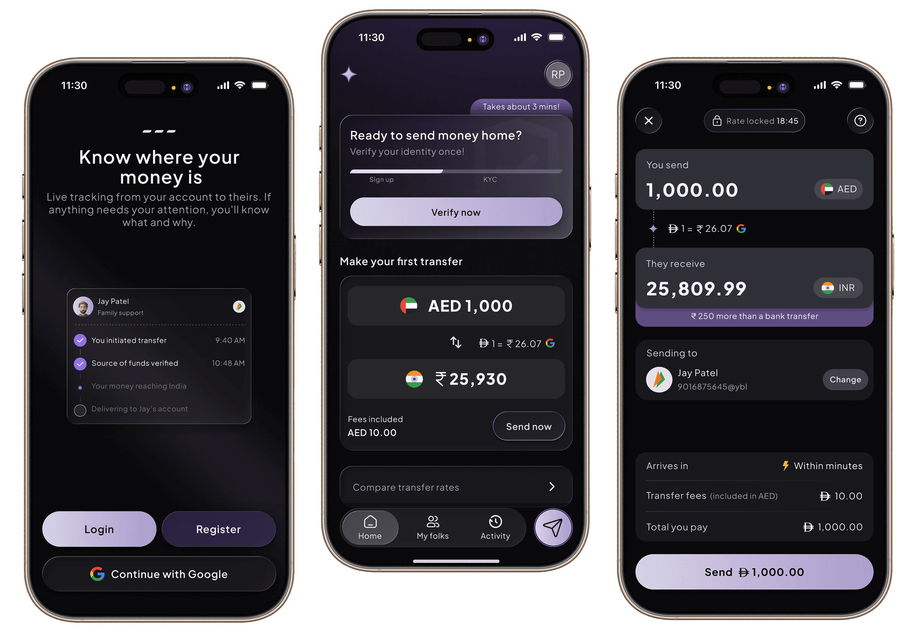
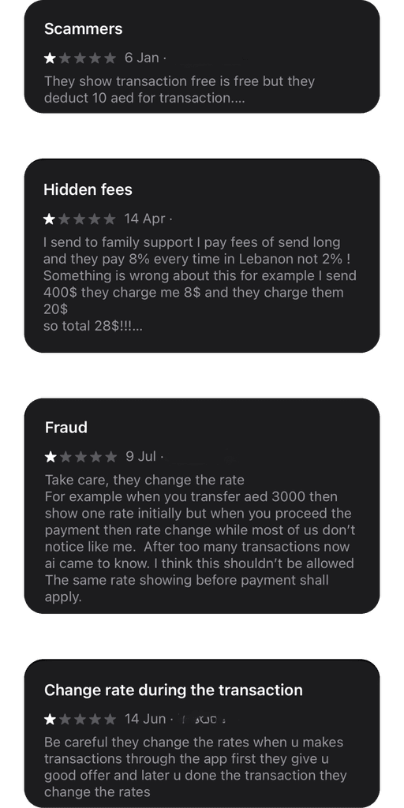
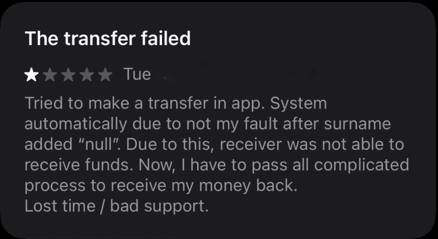
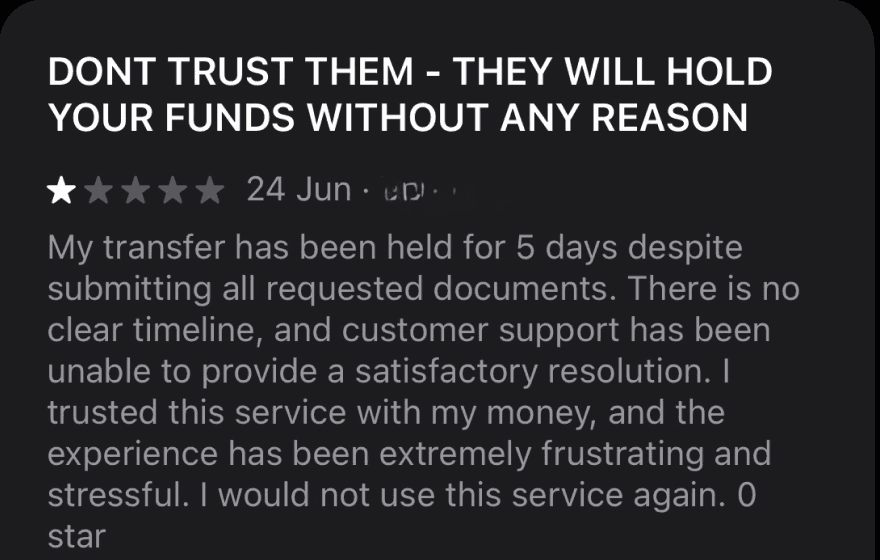
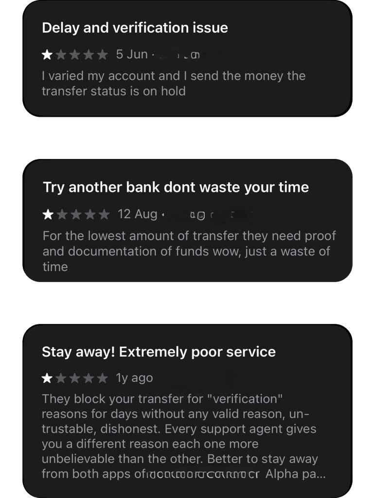
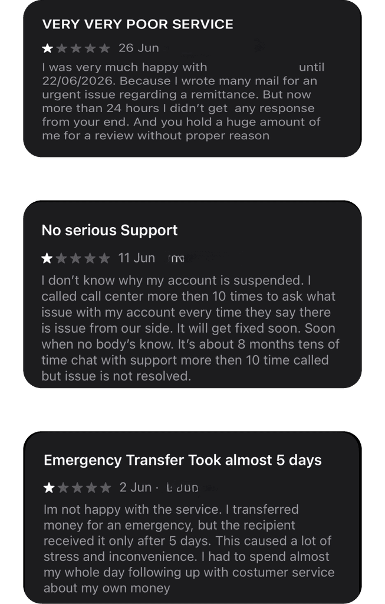
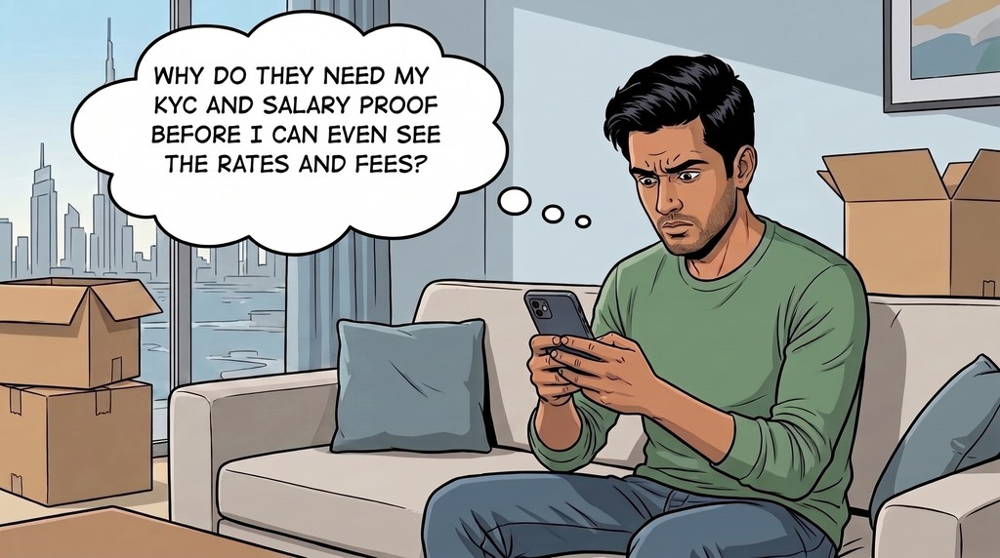
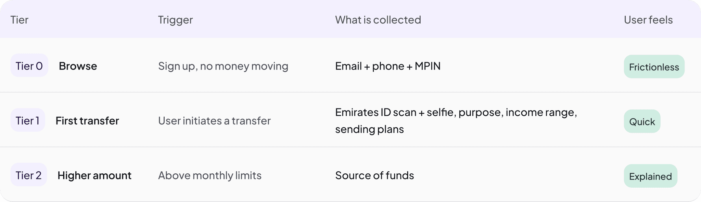
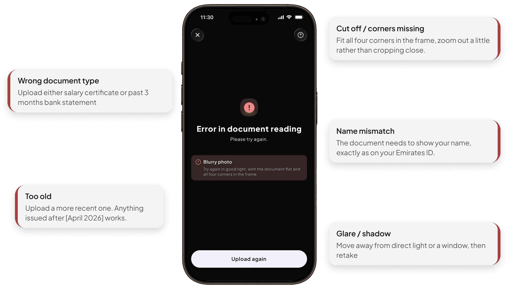
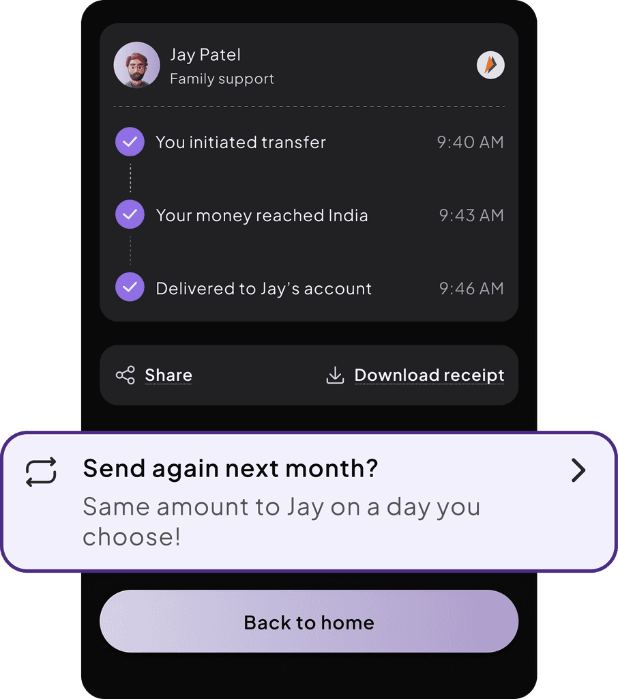

SILA - UAE TO INDIA REMITTANCE
Helping UAE expats send money to India in under 15 minutes with a 3-tier KYC that asks only what each transfer needs

THE CONTEXT
SILA is a UAE → India remittance app with transparent fees, clarity at every step, and step-by-step KYC.
The UAE to India corridor moves billions in remittances every year, largely from workers supporting families back home. I joined a founder as the freelance designer on his MVP which is a money transfer app built to feel fast and trustworthy rather than cluttered. I owned the design end to end, discovery through high-fidelity UI.
THE PROBLEM
What users and businesses face in money transfer apps
Users problems
Surprise fees
"zero fees" apps hide the margin in the rate; less lands than expected
A wall before value
ID and income asked in onboarding before even user experience the app
Unexplained holds
No reason, no document named, no timeline clarified
Silence after sending
Money enters a black box; "did it arrive?"
Business problems
Drop-off at the door
Front-loaded KYC is the funnel's biggest leak
Increased support tickets
"Where is my money" is the top support cost
Rejections lose users
Vague "verification failed" means retry blind, then uninstall
Bad UX is compliance risk
confusing forms produce wrong answers and flagged accounts
Trust is the “product” in fintech
THE RESEARCH
The pain points, in users' own words
Before designing, I read through App Store and Play Store reviews of the biggest transfer apps in the UAE
Hidden costs

Unexplained holds


Verification pain

Support

DISCOVERY
UX Problems identified
USER PERSONA
Meet Arjun, 27.
Moved to Dubai before 3 months . Sends money home every month.

His situation
Relocated from India 3 months ago. Sends money to family once or twice a month.
Tech comfortable, low patience for friction. Currently finding the best apps to send money.
Price-sensitive as sending often means small rate differences compound over a year.
“Will my money reach home quickly & will I know when it does?”
"Am I getting a fair rate, or losing money to hidden charges?"
"Why do they need my KYC and salary proof before I can even see the rates and fees?"
CONSTRAINTS & KYC
Designing inside the rules
Knowing which frictions are legally mandatory and which are lazy defaults is the whole game.
Constraints
Identity must be verified
No anonymous accounts. ID, date of birth and address are legally required.
Every user is screened
Sanctions and PEP checks run before onboarding completes.
Consent is explicit
The selfie is biometric data, it needs its own agreement, not a buried checkbox.
Purpose must be recorded
A required question on every transfer, not optional data.
Declared plans set the baseline
Monthly sending plans are what the system measures "unusual" against.
Thresholds trigger proofs
Above set limits, source-of-funds evidence is mandatory. No design can skip it.
Progressive KYC
Instead of demanding full verification upfront, I designed a three-tier model that asks only for what's needed to get started, then layers verification as the user's activity requires it. This lowers the initial wall while staying compliant.

KEY DECISIONS
Decisions that shaped the product
"They receive ₹25,809" is the biggest number on screen
Users think in what lands at home, not exchange rates. It even rides on the CTA.
Signup asks for 3 things
Email, Phone & MPIN
KYC when Arjun is motivated, not at the door
MPIN, OTP, UPI name-check patterns Arjun already knows
His money habits come from GPay and PhonePe. No new behavior to learn
THE USER-FLOW
See it in motion
The complete experience across onboarding, sending money, and the states
Flow 1 - Onboarding
An account in under a minute
Contact and a PIN
Email, phone, and an MPIN. Signup gets you an account; it doesn't verify you.
A step counter shows how far you are
Four-step signup feels like four steps not an open-ended form.
Auto save progress
User can quit in between and come back anytime, start from where he left
Rates visible with zero verification
Tier 0 means a newcomer comparing three apps can judge SILA on price and speed
Flow 2 - KYC
KYC at the moment of intent
Triggered by the first send, not signup
Verification lands when motivation is highest
The ID scan does the typing
Name, DOB, address and nationality auto-fill from one Emirates ID scan.
Verified instantly, or an honest 24h wait
Most users see "You're verified" instantly. The rest see "Almost there" with a 24-hour promise
Flow 3 - Add recipient + Send
Send money to India
Follows UPI pattern
Recipients can be added by UPI ID or bank account + IFSC
Rate, fee and total upfront
All amounts clear on one screen
Dual input
"Send 1,000 AED" or "they receive exactly 25,000 INR." Senders think in what the family needs.
"They receive ₹25,000" leads everywhere
The biggest number on the calculator, the review, and the CTA itself.
Expected by 9:55" becomes "in 14 minutes
The success screen is a state machine, the app makes a claim, then shows its receipt. Trust compounds per transfer.
TIER 2 VERIFICATION
Sending more than the monthly limit
Bigger transfers need proof of income, a requirement under UAE regulation. The design job was to make it clear, early, and one-time.
Shown before he pays, not after
An amber note and a meter as he types the amount.
Never blocked
"Send AED 6,000 instead" his remaining limit, calculated for him.
One document, one time
Salary certificate or 3-month bank statement. Named upfront, so he knows what to look for.
EDGE CASE
When the document is rejected
In cases like this, SILA shows the reason and the fix rather than generic "verification failed" and leave the user guessing.
The reason is specific
"The photo was too blurry to read" never "invalid document".
One fix, in plain words
Rest the document on a flat surface and hold your phone steady.
Rejection reasons, with its fixes

PROJECTED IMPACT
What should improve
Signup completion
Three inputs instead of a KYC wall
First-transfer conversion
Rate and fees visible before any sensitive ask
"Where is my money" tickets
Every hold answers what / how long / where

RETENTION
Return loops designed in
"Send this again next month?"
Appears only at delivered. One tap from a scheduled monthly transfer.
LEARNINGS & NEXT STEPS
Designing for trust is a different problem!!
Learnings
The worst screen sets the tone.
Along with good success messages, users remember is what the app said when their money stopped.
Regulation made the design easier, not harder.
Once I knew which rules were real, every field had a reason I could point to. "This exists because of a threshold" ends debates
Clarity is a feature, not a finish.
Step counters, named documents, live status, none of these are visual polish. They're the product doing its main job - telling the user the truth about where they stand.
What I would do next if still working on the product
KYC step-completion rate per step, to find the exact drop-off point
Time-to-verification against the ~3-minute abandonment threshold
Re-upload rate the document step is the highest-leverage lever
Transfer completion vs. cancellation split by where users drop
“A remittance app has to manufacture the trust a bank inherits”